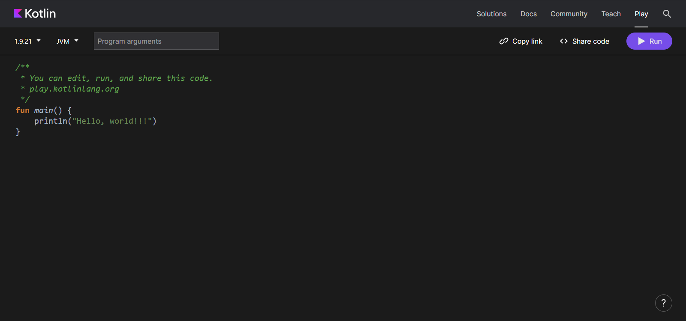

Начало
Начало
 Выполните свой первый код.
Выполните свой первый код.
Прежде чем вы приступите
В этом курсе вы научитесь создавать приложения для Android, используя язык программирования Kotlin, рекомендованный Google. Kotlin - это современный язык программирования, который повышает продуктивность разработчиков. С его помощью можно писать более краткий код для реализации той же функциональности по сравнению с другими языками программирования. Приложения, разработанные на Kotlin, обладают большей стабильностью, что делает их более устойчивыми и удобными для пользователей. Курс начинается с укладки прочных основ программирования на Kotlin. Вы ознакомитесь с основами языка, используя практические занятия (codelabs) из этого руководства, прежде чем приступить к созданию приложений.
Курс начинается с укладки прочных основ программирования на Kotlin. Вы ознакомитесь с
основами языка, используя практические занятия (codelabs) из этого руководства, прежде чем
приступить к созданию приложений.
Что вы будете делать:
- Написание коротких программ на Kotlin, отображающих сообщения при запуске.
Что вы узнаете:
- Как написать и запустить простую программу на Kotlin.
- Как модифицировать программу для изменения выходных данных.
Начало
В этой лаборатории по кодированию вы изучаете и модифицируете простые программы на языке
Kotlin. Программу можно представить как набор инструкций для компьютера или мобильного
устройства, указывающих, что нужно сделать, например, отправить сообщение пользователю или
рассчитать стоимость товаров в корзине покупок. Шаг за шагом, инструкции о том, что
компьютер должен выполнять, называются кодом. Изменяя код в программе, вы можете влиять на
её результат.
Для написания и редактирования кода вы используете инструмент под названием "редактор кода".
Это похоже на текстовый редактор, но с функциональностью для более точного написания кода,
такой как автозаполнение и отображение ошибок.
Для практики основ языка Kotlin вы будете использовать интерактивный редактор кода,
известный как Kotlinlang. Этот
редактор доступен через веб-браузер, поэтому у вас нет
необходимости устанавливать дополнительное программное обеспечение на свой компьютер. В
Kotlinlang вы можете напрямую редактировать и запускать код Kotlin, видя результат.
Важно отметить, что в Kotlinlang нельзя создавать приложения для Android. Для этого
вы впоследствии будете использовать Android Studio, другой инструмент, предназначенный для
написания и редактирования кода вашего приложения для Android.
Зайдите на игровую платформу Kotlinlang.
Откройте игровую платформу Kotlinlang в веб-браузере на своем компьютере. Вас должна встретить веб-страница, аналогичная представленному изображению:
В редакторе кода уже имеется несколько строк кода, которые представляют собой базовую программу.
fun main() {
println("Hello, world!")
}
Можете ли вы, даже не имея опыта в программировании, догадаться, что делает программа?
Запустите свою первую программу
Для запуска вашей программы, просто нажмите на кнопку .
При нажатии "Run" происходит много действий. Язык программирования Kotlin создан
для удобства людей, чтобы они могли легко читать, писать и сотрудничать в коде. Но
компьютеру нужно время, чтобы понять этот язык.
Вам требуется инструмент, известный как компилятор Kotlin. Этот инструмент анализирует
ваш код на языке Kotlin построчно и преобразует его в формат, понятный компьютеру. Этот
процесс называется компиляцией вашего кода.
После успешной компиляции вашего кода программа будет запущена, то есть произойдет ее
выполнение или экзекуция. В момент выполнения программы компьютер последовательно
выполняет каждую из ваших инструкций. Это можно сравнить с выполнением шагов при
следовании кулинарному рецепту, где каждый шаг считается инструкцией.
При запуске вашей программы вы должны увидеть следующий экран.
Внизу редактора кода вы обнаружите панель, отображающую результат выполнения вашей программы.
Hello, world!
Отлично! Главная задача этой программы заключается в выводе или отображении сообщения, содержащего приветствие Hello, world!
Внимание: Если вы не увидели результат, скопируйте три строки кода из предыдущего раздела в Kotlinlang и повторите попытку.
Как это устроено? В программе на Kotlin необходимо определить основную функцию, которая представляет собой конкретное место в вашем коде, с которого начинается выполнение программы. Основная функция является точкой входа или отправной точкой программы.
Теперь вам может быть интересно, что такое функция?